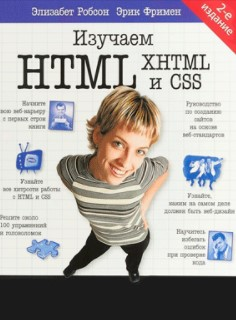

Ниже представленны различная литература, которая поможет вам в изучении HTML и CSS
1) Изучаем HTML, XHTML и CSS (Head First). Элизабет Робсон, Эрик Фримен

Показывает на простых примерах, как начать верстать сайты с нуля. Подходит как новичкам, так и профессионалам. Однако не стоит рассматривать данное учебное пособие как современный справочник. Это больше фундаментальная книга по основам. В последнем издании рассматриваются основы программирования на HTML 5. Есть множество наглядных примеров и скриншотов.
Следующая литература